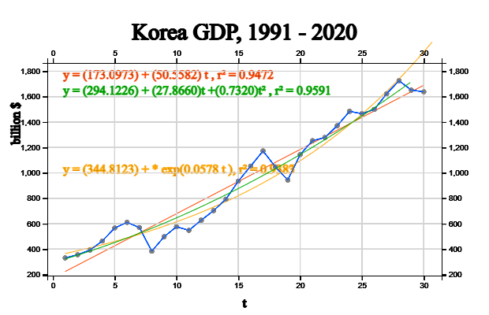

When the estimated regression coefficients are \(\beta_0 , \beta_1\), the validity test of the linear regression model is the same as the method described in Chapter 12. The standard error of estimate and coefficient of determination are often used. In a linear trend model, \(\sigma\) represents the degree to which observations can be scattered around the estimated regression line at each time point. As an estimate of this \(\sigma\), the following standard error is used. $$ s \,=\, \sqrt { \frac{1} {n-2} \sum_{t=1}^n ( Y_t - {\hat Y}_t )^2 } $$ A smaller standard error \(s\) value indicates that the observed values are close to the estimated regression line, which means that the regression line model is well fitted.
The coefficient of determination is the ratio of the regression sum of squares, RSS, which is explained out of the total sum of squares, TSS. $$ R^2 \,=\, \frac{RSS}{TSS} $$ The value of the coefficient of determination is always between 0 and 1, and the closer the value is to 1, the more dense the samples are around the regression line, which means that the estimated regression equation explains the observations well.
As explained in Chapter 12, since it is difficult to determine the absolute criteria for adequacy of the standard error or the coefficient of determination, a hypothesis test is used to determine whether the trend parameter \(\beta_1\) is zero or not.
\( \qquad \text{Hypothesis: } \qquad \,\, H_0 : \beta_1 = 0, H_1: \beta_1 \ne 0\)
\( \qquad \text{Test statistic:} \qquad t_{obs} = \frac {{\hat \beta}_1 } { SE ({{\hat \beta}_1 }) } \) ,
Here, \( SE( \hat{ \beta_1} ) \,=\, \frac{ s} { \sqrt { \sum_{i=1}^ n (i - \overline t )^2 } } \)
\( \qquad \text{Rejection region:} \quad If \,\; |t_{obs}| \,>\, t_{n-2,\alpha/2}, \,\,reject\,\, H_0 \) with significance level \(\alpha\)
If the null hypothesis \(H_0\) is not rejected, the model cannot be considered valid.
The assumption for error \(\epsilon_t\) is tested using the residual, which is the difference between the observed time series value and the predicted value which is called residual analysis. Residual analysis usually examines whether assumptions about error terms such as independence and equal variance between errors are satisfied by drawing a scatter plot of the residuals over time or a scatter plot of the residuals and predicted values. In the scatterplots, if the residuals do not show a specific trend around 0 and appear randomly, it means that each assumption is valid. To examine the normality assumption of the error term, draw a normal probability plot of the residuals, and if the points on the figure show the shape of a straight line, it is judged that the assumption of the normal distribution is appropriate.
If the linear regression model is suitable, the predicted value \({\hat Y}_{t_0} \,=\, {\hat \beta}_0 \,+\, {\hat \beta}_1 \cdot t_0 \) at the time point \(t_0\) can be interpreted as a point estimate for the mean of the random variable \(Y_{t_0}\) at the time point, and the confidence interval for the mean of \({\hat Y}_{t_0}\) at this time \(t_0\) is as follows: $$ {\hat Y}_{t_0} \,±\, t_{n-2,\alpha/2} \cdot SE ({\hat Y}_{t_0} ) \;\; where \;\, SE ( {\hat Y}_{t_0} ) \,=\, s \cdot \sqrt { \frac{1}{n} + \frac {(t_0 - \overline t )^2} { \sum_{i=1}^n (i - \overline t )^2 } } $$
If the trend is in the form of a quadratic, cubic or higher polynomial, the following multiple linear regression model can be assumed.
\( \qquad \text{Quadratic} \qquad Y_t = \beta_0 + \beta_1 \cdot t + \beta_2 \cdot t^2 + \epsilon _t \)
\( \qquad \text{Cubic} \qquad \qquad Y_t = \beta_0 + \beta_1 \cdot t + \beta_2 \cdot t^2 + \beta_3 \cdot t^3 + \epsilon _t \)
The prediction method is similar to the above simple linear regression model.
If the trend is not a polynomial model as above, the following model can also be considered.
\( \qquad \text{Square root} \qquad Y_t = \beta_0 + \beta_1 \cdot \sqrt{t} + \epsilon _t \)
\( \qquad \text{Log} \qquad \qquad \quad \; Y_t = \beta_0 + \beta_1 \cdot log(t) + \epsilon _t \)
These models are the same as the linear regression model if \(\sqrt{t}\) or \(log(t)\) are replaced with the independent variable X in the simple linear regression and the prediction method is similar.
In addition, the function types to which the linear regression model can be applied by transformation are as follows.
\( \qquad \text{Power} \qquad \qquad Y _{t} = \beta_{0} \cdot t ^{\beta _{1}} + \epsilon _{t} \)
\( \qquad \text{Exponential} \quad \;\; Y_t = \beta_0 \cdot e^ {( \beta_1 t)} + \epsilon _t \)
In the case of these two models, the parameters should be estimated using the nonlinear regression model, but if the error term is ignored, the linear model can be estimated approximately as follows:
\( \qquad \text{Power} \qquad \qquad log(Y_{t}) = log(\beta_{0}) +{\beta _{1}} \cdot log(t) \)
\( \qquad \text{Exponential} \quad \;\; log(Y_t) = log(\beta_0) + \beta_1 \cdot t \)
Korea's GDP from 1986 to 2021 is shown in [Table 13.4.1]. <Figure 13.4.1> shows the application of three regression models to this data. Among these models, the quadratic model has the largest value of \(r^2\) = 0.9591, so it can be said that the time series is the most suitable model. However, additional validation of the model is required.
| Year | GDP (billion $) |
|---|---|
|
1991 1992 1993 1994 1995 1996 1997 1998 1999 2000 2001 2002 2003 2004 2005 2006 2007 2008 2009 2010 2011 2012 2013 2014 2015 2016 2017 2018 2019 2020 |
330.65 355.53 392.67 463.62 566.58 610.17 569.76 383.33 497.51 576.18 547.66 627.25 702.72 793.18 934.9 1053.22 1172.61 1047.34 943.67 1143.98 1253.16 1278.43 1370.8 1484.32 1465.77 1499.36 1623.07 1725.37 1651.42 1638.26 |
|

<Figure 13.4.1> GDP of Korea and Three Regression Model
|